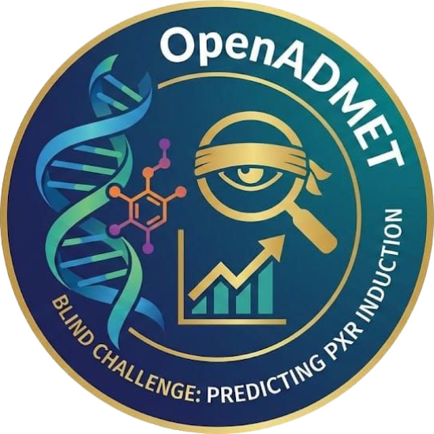
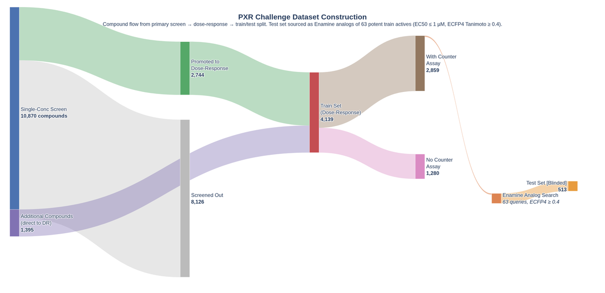

Track 1
Activity
各化合物と PXR の活性を予測 this talk- Input
- SMILES
- Target
- pEC50
- Task
- Regression
- Metric
- MAE
- Train / Test
- 4,140 / 513
Lab Seminar
OpenADMET Blind Challenge
Challenge での戦略とモデルづくりの裏話をお話しします
4th / 103 teams MAE 0.4113

PXR 誘導活性に関する AI モデル開発コンペティション 2 つの Track からなり いずれも正解は OpenADMET 独自の実験データ
効く（efficacy）だけでは薬にならない 体内でどう振る舞うかを示す ADMET が創薬の成否を分ける
Impact
ADMET の問題は 臨床試験での脱落や開発中止 の主要な要因
In silico
だから 合成や実験の前に計算で予測 創薬の初期段階でリスクを見極める
ML
いま 機械学習を用いた ADMET 予測モデル の研究開発が活発
体内に入った異物や薬物を感知する核内受容体 (xenobiotic sensor) 薬物代謝酵素の転写を活性化してオンにする 主に CYP3A4（市販薬の約 50% を代謝する酵素）を制御する
Activation liabilities
薬物間相互作用 (DDI)
代謝が速まり 併用薬が有効濃度を下回る
肝毒性
反応性の高い毒性代謝物が増える
化学療法抵抗性
腫瘍細胞で抗がん剤の排出が促進される
Recent example
COVID Moonshot の Mpro 阻害剤 (S)-x38 (DNDI-6510) は PXR 活性化で代謝が速まり 有効濃度を保てず 前臨床で開発中止
Structural feature
大きくて柔軟な結合部位 → 無差別に何でも結合する性質 "promiscuous"

2,744primary screen ＋ 1,395既存データ ＝ 4,139pEC50 付き
Enamine の多様性セットと FDA 承認薬 約 1.1 万件を単一濃度でスクリーニング 反応した分を 8 点用量反応にかけ Hill 式で fit
PXR の結合部位を持たない counter assay でも光るものは偽陽性として除外 データ改訂で 1 件減り 学習は改訂前の 4,140 件
114EC50 ≤ 1 µM → 63on-target → 513Analog Set
counter assay で反応の小さい 63 件に絞り 1 件につき市販の類似化合物を 10 件以上検索 発注・実測して最終 QC を通ったのが 513 件
要するに potent な化合物の類縁体だけの集合
Train と Test のほか primary screen (single-conc) で得られたデータも 補助データ (AUX data) として利用可能
| Dataset | Compounds | SMILES | pEC50 | Emax | counter assay |
log2fc 8.25 µM |
log2fc 33 µM |
|---|---|---|---|---|---|---|---|
| Train | 4,140 | ○ | ○ | ○ | 2,859 | 2,375 | 2,321 |
| Test | 513 | ○ | × | × | × | × | × |
| AUX data | 10,870 | ○ | × | × | 2,360 | 10,747 | 9,523 |
提出は最初から最後まで 513 件すべて 変わるのは採点に使われる範囲だけ
採点される 正解は blind 正解が公開済み AS = Analog Set（potent 化合物の類縁体）
Phase 1
04-01 → 05-25
Leaderboard に出るのは AS1 の分だけ
ただし どの化合物が AS1 かは非公開
Interim
05-26
Phase 1 の最終提出を 513 件で採点
AS1 の正解が公開 内訳もここで判明
Phase 2
05-26 → 07-01
最終順位は AS2 の 260 件で決まる
Leaderboard なし 手がかりが無い
化合物が PXR に結合すると 下流につないだ ルシフェラーゼ が転写されて細胞が光る
この 発光量 が活性の指標になる 濃度を振って測れば用量反応曲線が引ける
最終評価は MAE Leaderboard (LB) からは他の指標も得ることができる
予測が実測からどれだけ離れているか その絶対値の平均
MAE —
帯の長さがその化合物の誤差 その平均が MAE 単位は pEC50 のままなので 0.41 は「平均して 0.41 外している」
MAE を「平均値をいつも答えるモデル」の MAE で割った値
RAE —
—
1 を下回れば平均を答えるより マシということ 単位が消えるので データセットが違っても比べられる
ばらつきのうち何割を説明できたか
R² —
点が破線に乗るほど 1 に近づく 二乗なので大きく外した点ほど強く効く
値ではなく順位がどれだけ一致しているか
ρ —
d は各化合物の順位の差 最初は全て一致していて ρ = 1 順位を入れ替えると交差した線の数だけ ρ が下がる 値を全体にずらしても線は平行に動くだけなので ρ は変わらない
| MAE | RAE | R² | ρ | Phase 1 LB | ||
|---|---|---|---|---|---|---|
| 1 | AIDD-LiLab | 0.4000 | 0.5280 | 0.6363 | 0.8428 | 3 |
| 2 | toxicity | 0.4005 | 0.5288 | 0.6628 | 0.8309 | 1 |
| 3 | nova | 0.4057 | 0.5357 | 0.6427 | 0.8293 | 4 |
| 4 | N283T | 0.4059 | 0.5359 | 0.6496 | 0.8343 | 8 |
| 5 | sia | 0.4078 | 0.5384 | 0.6353 | 0.8361 | 5 |
| 6 | oxidane | 0.4093 | 0.5404 | 0.6386 | 0.8312 | 7 |
| 7 | PXRegressor | 0.4134 | 0.5458 | 0.6401 | 0.8308 | 11 |
| 8 | matcha-croissant | 0.4157 | 0.5486 | 0.6246 | 0.8291 | 10 |
| 9 | jaybirdy | 0.4257 | 0.5619 | 0.6126 | 0.8212 | 6 |
| 10 | Maisy | 0.4261 | 0.5624 | 0.6071 | 0.8242 | 9 |
採点が AS1 の 253 件から 513 件に広がり Phase 1 LB の 8 位から 4位 へ 同じ提出を採点し直しただけ
| MAE | RAE | R² | ρ | ||
|---|---|---|---|---|---|
| 1 | matcha-croissant | 0.4061 | 0.5631 | 0.5982 | 0.8269 |
| 2 | AIDD-LiLab | 0.4092 | 0.5676 | 0.5907 | 0.8245 |
| 3 | AIDD-LiLab-Aggressive | 0.4104 | 0.5692 | 0.5886 | 0.8216 |
| 4 | N283T | 0.4113 | 0.5703 | 0.6008 | 0.8161 |
| 5 | toxicity | 0.4121 | 0.5713 | 0.5790 | 0.8107 |
| 6 | tguttenb1 | 0.4139 | 0.5741 | 0.6075 | 0.8201 |
| 7 | rdkbio | 0.4149 | 0.5751 | 0.5701 | 0.8095 |
| 8 | Multi | 0.4152 | 0.5755 | 0.5802 | 0.8172 |
| 9 | rasayan-labs | 0.4170 | 0.5780 | 0.5600 | 0.8092 |
| 10 | Rasayan-ai | 0.4192 | 0.5811 | 0.5573 | 0.8080 |
優勝との差は 0.005 MAE の標準偏差 ±0.028 の 5分の1 しかない
記述子の分布に目立った特徴はない Ro5 の 4 条件はどちらもほぼ全件が適合し、いわゆる drug-like な化合物が大半
使ったもの UMAP split 5-fold
化学構造の近さ で切る分割
共通骨格ではなく fingerprint 全体の近さ でまとまる
クラスタを丸ごと 1 つの fold に入れる だから 似た化合物が train と val にまたがらない
学習 4,140 件を クラスタ単位で 5 つ に分けるval の MAE
* 本来の OOF MAE は全件の予測を繋いで 1 回で計算する 今回は実用上問題なし
ほかの分割も試した val の中身に差はなかった
| 分割 | どう切るか | val 件数 | y 分散 | val→train NN | coverage |
|---|---|---|---|---|---|
| random | 無作為に 5 等分 比較の基準 | 828 | 0.864 | 0.396 | 100% |
| UMAP | fingerprint → UMAP → KMeans 前スライドの手順 | 828 | 0.861 | 0.340 | 100% |
| scaffold | 共通骨格ごと 定番だが今回は骨格がほぼ単独で効かない | 828 | 0.862 | 0.388 | 100% |
| analog-only | test の作り方と同じ手順で切る | 170 | 0.676 | 0.414 | 20.5% |
| mixed analog | analog-only を coverage 100% に直したもの | 828 | 0.863 | 0.398 | 100% |
y 分散は random とも区別がつかない 差が出るのは NN だけで、UMAP が最も遠い＝最も厳しい analog-only は coverage 2 割で OOF が作れない
| 上の 2 つを、同じモデルで実際に提出 | OOF MAE | LB MAE | 乖離 |
|---|---|---|---|
| UMAP | 0.528 | 0.574 | +0.046 |
| analog-only | 0.464 | 0.580 | +0.116 |
OOF が良く見えたのは val の分布が狭かっただけ ここは時間をかけるところではないと判断して UMAP のまま進めた
Transfer learning with graph neural networks for improved molecular property prediction in the multi-fidelity setting
David Buterez et al. (Cambridge / AstraZeneca) Nature Communications (2024) DOI: 10.1038/s41467-024-45566-8
問い創薬スクリーニングの階層
この low-fidelity 側を、high-fidelity の予測にどう活かすか
比較した 6 通り数字は 51 ケース中
最良だった回数
結論
生ラベルを足すだけで MAE が 10〜40% 下がり、embedding はそれをさらに最大 10% 上回る
効くのは adaptive readout があるときだけ 表現を使った 41 勝のうち 40 がそちら側
今回のデータは この論文が想定している設定そのものだった
対応
high-fidelity→学習の pEC50 4,140 件
low-fidelity→単一濃度の log2_fc 10,875 化合物
論文との違い
生ラベルが使えない test に実測がない
LF が桁違いに少ない 論文は 100 万件以上
採用した戦略
| 2 LF モデルの予測値 | log2fc_8p25_pred / log2fc_33_pred を特徴量に足す |
|---|---|
| 4 LF の embedding | log2_fc で pretrain した encoder の frozen embedding を渡す |
今回の応用encoder の上に
何を載せるか
論文にない TabPFN を下流に置いた 小標本の非線形回帰がそのまま使える
| 下流 ChemProp (D-MPNN) での比較 | OOF MAE | Spearman |
|---|---|---|
| 4 の embedding を TabPFN で読む | 0.4371 | 0.807 |
| 6 adaptive readout を学習 論文の一押し | 0.4818 | 0.758 |
| 5 凍結せず直接 fine-tune | 0.5071 | 0.755 |
凍結して下流を単純にするほど良くなった 枠組みは論文のまま、下流だけ差し替えた
2 log2_fc を予測するモデルを作り、その予測値そのものを特徴量にした log2fc_8p25_pred / log2fc_33_pred の 2 列
実測 log2_fc
pred にすると
pEC50 との相関は pred が突出して強い train での Pearson r* obs は測った化合物のみ 2,722 / 2,659 件 Boltz は 4,138 件 他は 4,140 件
Challenge 後検証pred log2fc + 線形回帰だけで RDKit 217 次元 + LightGBM と同等の精度
| 特徴量 | モデル | 次元 | MAE | Spearman |
|---|---|---|---|---|
| pred 8.25 µM | Linear | 1 | 0.609 | 0.782 |
| pred 33 µM | Linear | 1 | 0.571 | 0.746 |
| pred 両方 | Linear | 2 | 0.572 | 0.725 |
| Boltz-2 affinity | Linear | 1 | 0.747 | 0.602 |
| RDKit 記述子 | LightGBM (untuned) | 217 | 0.570 | 0.677 |
| Phase 1 提出（参考） | ensemble | ~2,100 | 0.406 | 0.834 |
* challenge 終了後に公開された test 全件（AS1 + AS2）に対する結果
pred log2fc は非常に強力な特徴量 上位に行けたのはこれを見つけられたから
Accurate predictions on small data with a tabular foundation model
Noah Hollmann et al. Nature (2025) DOI: 10.1038/s41586-024-08328-6 GitHub 使うのは実装 TabPFN v2.6
何が違うか表データのための
基盤モデル
ふつうの機械学習は、データごとにモデルを学習させる TabPFN は学習させないGPT が文章を読んで続きを返すように、
合成表データで事前学習した Transformer が表を文脈として読んで予測を返す (In-Context Learning)
長所と短所
効くところ
苦しいところ
今回の使い方
この後に出てくる 9 メンバーすべての readout 特徴量の作り方が違うだけで、最後に読むのは常にこれchallenge 中に v3 が出たが、手元では v2.6 のほうが精度が良かったのでそのまま
特徴量の作り方で 3 つの family に大別される readout はすべて TabPFN v2.6
tabular core 件
記述子や pred log2fc など 2,103 の特徴量を使う素直な tabular model
frozen embed 件
log2_fc で pretrain した encoder を凍結し、その embedding を渡す
Boltz trunk 件
Boltz-2 trunk を使うモデル log2_fc のシグナルが入らない唯一の系統
| alias | encoder / features | family | strategy | OOF MAE | 重み |
|---|
* alias はこの発表用の呼び名で、モデルそのものを指すわけではない strategy 列の番号は Strategy — The Paper の 6 通りに対応

tabular-full と tabular-top500 が共有する 2,103 次元の特徴量プール 由来で 4 種類に大別される
2D descriptors1,732 次元
分子量や LogP、トポロジーなど分子の性質を表す特徴量 SMILES があれば計算で出せる RDKit と Mordred はどちらも化合物の機械学習では定番のライブラリ
Mordred 1,515 RDKit 217
CheMeleon300 次元
分子をグラフとして読んだ潜在表現 化合物を Mordred 記述子で事前学習した ChemProp (D-MPNN) が出力する embedding
単体では弱い 入れると tabular core が 0.443 → 0.421
本来 2,048 次元、ミスで不完全な形に
Boltz-2 features69 次元
Boltz-2 の予測構造と出力から得られる特徴量
| tier-0 | 19 | Boltz が出力する affinity や confidence のスカラー値 |
|---|---|---|
| tier-1 | 44 | pocket や ligand に注目した confidence の統計値 |
| pose-Jazzy | 6 | リガンドの水素結合・水和自由エネルギー (Jazzy) |
predicted log2fc2 次元
前に紹介した log2fc_8p25_pred / log2fc_33_pred の 2 つ
8.25 µM と 33 µM の 2 つを head にしたマルチタスクで ChemProp を事前学習 (13,136 化合物)
ハイパーパラメータは下流の pEC50 OOF MAE を見て Optuna で調整 複数 seed の平均でばらつきを軽減
これらの特徴量を TabPFN に渡すのが Tabular Core
同じ 2,103 列から LightGBM gain (特徴量重要度) の上位 500 列だけを選んで TabPFN に渡すのが tabular-top500
gain の 3/4 は pred の 2 列全 2,103 列での gain シェア
全部入れるより上位 500 列残す列数 K と OOF MAE
それでも 2 メンバーとも残す top500 は弱い列を落として鋭く、full は 2,103 列すべてを持って広く
log2fc で encoder を事前学習して凍結し 出てくる固定長ベクトルだけを TabPFN に渡す
pEC50 では一切 fine-tune しない
ChemProp256 次元
化合物の深層学習の大定番 中身は D-MPNN (GNN)
通常の GNN: 原子単位で情報を回す
D-MPNN: 結合を有向で扱い 来た方向に戻さない 堂々巡りを回避
pred log2fc と同じモデル ここでは embedding だけを使う
KERMT3,200 次元
事前学習済み graph transformer
GROVER を NVIDIA と Merck が再実装・改良 ZINC + ChEMBL 約 1,100 万分子で事前学習されたものを log2fc で継続事前学習
次元が多いが top500 や PCA で縮めるとかえって悪くなる
MoLFormer768 次元
事前学習済み SMILES Transformer (言語モデル)
MoLFormer-c3 ZINC + PubChem 約 11 億分子で事前学習
LoRA と呼ばれる方法で log2fc を追加学習し [CLS] ベクトルを凍結
GatedGCN & AttentiveFP512 次元
gated GNN と graph attention 試した GNN のうちたまたま良かった 2 つで アーキテクチャ自体に深い意味はない
単体では弱いが 強いモデルに重みが寄り切るのを防ぐ 緩衝材
pEC50 で学習させるより log2fc で学習させて凍結するほうが強い ChemProp で最初に分かったこと* 直接 fine-tune も test では悪くなかった OOF 0.53 と弱かったのに 答え合わせ後の test では 0.48 で 凍結の 0.44 に迫る OOF が差を誇張していた
名前に反して この 2 つは Boltz-2 の予測構造を使っていない Boltz trunk の embedding を TabPFN に読ませる
予測の条件
Input: PXR-human 全長 434 残基 (UniProt O75469) + 各リガンド (train + test 4,653)*
オプション: MSA: AFDB Template: なし Pocket 指定: あり (13 残基) sample: 1 recycle: 3
* 前処理エラー 3 件 1 件は修正して復旧 2 件は断念 (Au 錯体 / 3D 配座を作れず)
pooling 設計
違いは pool する範囲だけ pocket → Boltz-pocket 全体 → Boltz-allpairs

どこが効いたか
効いているのは z のペア表現 128 次元だけで 0.490 と 全部入りの 0.486 に肉薄する
s は 768 次元あっても 0.507 リガンド単体の形より 残基とリガンド原子の関係が効いている Boltz-2 自身の affinity module がペアを重視する設計とも整合する
唯一の非 log2fc
9 メンバーでここだけが log2fc を一切使わない 他メンバーとの相関も平均 0.85 と最も低い 全体は 0.88
構造だけを見て単体 0.486 他の全メンバーを駆動している log2fc の信号なしでこの水準に届く 削ると OOF は良く見えるのに public LB が悪化したので意図して残している
基盤モデルとして
構造生成と長い diffusion を飛ばせる trunk だけなら軽く 大規模な化合物集合にも回せる
同じ考え方は PXR 以外の標的、binding / non-binding 分類、selectivity の補助表現にも広げられる 構造予測モデルをポーズを出す道具ではなく protein-aware な表現抽出器として使う方向
おまけ: pose
pose 由来は confidence までの利用にとどまった
affinity と confidence は tabular core の特徴量として入っている pose そのものから作った特徴は gain が出ず不採用
この標的では Boltz-2 は 構造予測器 としてより 学習表現 として価値があった
Caruana forward selection重みは係数ではなく 選ばれた回数
単体の強さと重みは 一致しない 左 単体の OOF MAE 右 アンサンブルでの重み
メンバーはどれくらい独立か あまり独立ではない 事後検証 test 予測どうしの相関 AS1 + AS2
全体
ほぼ全ペアが高相関 全 36 ペア 〜 平均
log2fc より強い手がかりがない Boltz は少し低いが OOF では他と変わらない 使える情報が限られている
役割
重みの小さいメンバーを外すと悪化 family share 0.94 public LB +0.006
効いているのは精度ではなく 寄りすぎを止める緩衝材としての働き
高相関の壁
新しいモデルを作っても高相関で弾かれるか 入れても悪化するターンが続いた
→ モデルを増やす方向から calibration や gate の工夫へ軸足を移した
順位は当たっているのに 目盛りと中心がずれていた
診断
Spearman・Kendall・R2 は上位なのに MAE と RAE だけ悪い
どの化合物が強いかの並びは合っているが pEC50 のスケールと中心がずれている状態
メンバー追加ではなく test に寄せた重みで引いた一次式で アンサンブルの出力を後から補正
重みを作る
Morgan fingerprint で train / test を判別する分類器を作り 密度比を化合物ごとの重みにする
P(test|x) / (1 − P(test|x)) を [1/3, 3] でクリップ 分類器が強すぎると少数の test 似の化合物に引っ張られるためクリップが必須
直線を引く
その重みで OOF 予測 4,140 件と正解ラベルから一次式をフィット 5-fold nested CV で検証
傾きが正なので並び順は壊れず スケールと中心だけ動く test に似た化合物ほど この直線の決定に効く
test に当てる
同じ一次式を test 予測にそのまま適用
使ったのは test 化合物の構造だけ 正解ラベルは一切見ていない
アンサンブルの予測は正解より幅が狭い 強い化合物を低めに 弱い化合物を高めに出す
最終アンサンブル重みで再現 unblinded test 513 件
予測の散らばりも戻る 正解 0.996 に対し 0.703 → 0.767
帯域ごとの MAE 変化
Spearman は 1 つも動かない 順位を保ったまま スケールと中心だけが直るただし効くのは主に高活性側 中域 (pEC50 3〜5) では微悪化する
ここから先は研究ではなく競技の手さばき メンバーを差し替え ゲートを足し 提出して 下がったら残す
最終提出
id55 = 補正済みアンサンブル (id51) に potent-46 に似た化合物だけ top500 の方向へ寄せる
Tanimoto 0.40 から 0.15 幅で緩やかに立ち上げ 寄せる量は 0.35 寄せる先は top500 メンバーと素のアンサンブルの差
Phase 2 は leaderboard なし 答え合わせ後に見ると 動かした分だけ悪くなっていた
Phase 1
LB に合わせに行くのをやめた 最後は id55 をそのまま出し直して終了
AS1 だけの最終順位は 8 位 答えが半分公開された中間集計 (AS1 + AS2) では 4 位まで上がった
Phase 2
公開された AS1 を追加した学習 + 高活性ゲートの実装
AS1 を追加しても改善されず ゲートは精度 (AUC 0.88) は良いものの 操作する幅がイマイチ 低活性はリスクがあったので回避
土台が id55 だったので傷は浅く AS2 は 4 位
blind の難しさ
手元の候補で最良だったのは 0.4056 優勝の 0.4061 を上回っていた
動かす値が多く 自前の事前チェックで reject
LB がない Phase 2 は自分で足切りするしかなく 中間で良好だった id55 を anchor に置き そこから離れない候補だけを通した
| MAE | RAE | R² | ρ | Phase 1 LB | ||
|---|---|---|---|---|---|---|
| 1 | AIDD-LiLab | 0.4000 | 0.5280 | 0.6363 | 0.8428 | 3 |
| 2 | toxicity | 0.4005 | 0.5288 | 0.6628 | 0.8309 | 1 |
| 3 | nova | 0.4057 | 0.5357 | 0.6427 | 0.8293 | 4 |
| 4 | N283T | 0.4059 | 0.5359 | 0.6496 | 0.8343 | 8 |
| 5 | sia | 0.4078 | 0.5384 | 0.6353 | 0.8361 | 5 |
| 6 | oxidane | 0.4093 | 0.5404 | 0.6386 | 0.8312 | 7 |
| 7 | PXRegressor | 0.4134 | 0.5458 | 0.6401 | 0.8308 | 11 |
| 8 | matcha-croissant | 0.4157 | 0.5486 | 0.6246 | 0.8291 | 10 |
| 9 | jaybirdy | 0.4257 | 0.5619 | 0.6126 | 0.8212 | 6 |
| 10 | Maisy | 0.4261 | 0.5624 | 0.6071 | 0.8242 | 9 |
採点が AS1 の 253 件から 513 件に広がり Phase 1 LB の 8 位から 4位 へ 同じ提出を採点し直しただけ
| MAE | RAE | R² | ρ | ||
|---|---|---|---|---|---|
| 1 | matcha-croissant | 0.4061 | 0.5631 | 0.5982 | 0.8269 |
| 2 | AIDD-LiLab | 0.4092 | 0.5676 | 0.5907 | 0.8245 |
| 3 | AIDD-LiLab-Aggressive | 0.4104 | 0.5692 | 0.5886 | 0.8216 |
| 4 | N283T | 0.4113 | 0.5703 | 0.6008 | 0.8161 |
| 5 | toxicity | 0.4121 | 0.5713 | 0.5790 | 0.8107 |
| 6 | tguttenb1 | 0.4139 | 0.5741 | 0.6075 | 0.8201 |
| 7 | rdkbio | 0.4149 | 0.5751 | 0.5701 | 0.8095 |
| 8 | Multi | 0.4152 | 0.5755 | 0.5802 | 0.8172 |
| 9 | rasayan-labs | 0.4170 | 0.5780 | 0.5600 | 0.8092 |
| 10 | Rasayan-ai | 0.4192 | 0.5811 | 0.5573 | 0.8080 |
優勝との差は 0.005 MAE の標準偏差 ±0.028 の 5分の1 しかない
Behind the Scenes
ここからは 裏話
順位は僅差でたまたま 一番の収穫は 小規模の環境で上位に残れたこと
作業環境
マシン
自宅のゲーミング PC
GPU
RTX 5080 (16 GB)
人数
1
期間
3 か月 稼働 45 日
データ
公開データのみ
上位には製薬企業のチームも 自社データを持つチームもいた
そこから出たもの
4th / 103
Tier 1 優勝との差は 0.0052
9メンバー
アンサンブル ＋ post-hoc 補正
260commits
161 PR 59 issue
1,396~files
git 管理下のみ うち 383 が Python
これを 1 人で回せたのは AI agents をうまく活用した点
このプロジェクトで 私が書いたコードと文章はゼロ このスライドも Claude Code が書いています
Claude Code Opus 4.8
初期のコーディング役
Codex 移行後も文章系で利用
Codex 5.5
途中から CC と交代
Coding 最強 文章・グラフはカス
ChatGPT
Deep Research で文献調査
調べるだけでなく問題解決にも
AI 向けの環境特別なことはせず AI を迷わせない側を整える
pixi
環境を 1 ファイルに固定
PostgreSQL
データも実験結果も DB に
GitHub issue
実験ログは issue に集約
PR
個人開発でも PR を必須に
tmux
長時間の実行を任せる
MCP / skill
導入は TogoMCP だけ
Deep Research の活用
01Context
これまでの会話をそのまま渡す
02Prompt
質問文は CC / Codex に書かせる
03Deep Research
文献と知見を横断して整理させる
04Adapt
論文のままではなく課題に合わせる
出会えたものButerez et al. 2024 multi-fidelity transfer calibration / uncertainty 系 初期の文献調査も同じやり方
TogoMCP も便利！
UniProt・PDB・ChEMBL をまたいだ調べものが 聞くだけで済む 手で集めると抜けるし取り違える
PXR に関する DB の情報を教えて
UniProt は O75469 ChEMBL は CHEMBL3401 PDB は 72 件で…
なんでもかんでも AI というわけにはいかない 大小様々なミスが多発
気づかれない実装ミス
CheMeleon の 2048 次元を 未学習の射影で 300 に潰したまま完走
option のつけ忘れ
Boltz-2 を 4 日回した結果が 意図した設定ではなかった
結果の上書き
前の実験の出力を消してしまい 再現できなくなった
ファイルの散乱
同じ話の md が増え 古いほうを読みに行く
実行前は再現性にうるさいのに 実行後の再現性は確保されていない 細かい設定に注意を取られて 肝心の中身が筋違いになる
アイデア自体は 自分で出したほうが当たる agent は良くも悪くも堅実で定番寄り 指示する側が要る
全チームのモデルレポートが公開されている 上位はほぼ企業 その中に 1 人で入った
| # | 所属 | 主なモデル | Ens. | 3D | conc. | counter | 内部 | MAE |
|---|---|---|---|---|---|---|---|---|
| 1 | Inductive Bio企業 | Multitask GNN ＋ proxy-SVR Chemprop / CheMeleon / Uni-Mol2 / TabICL | 2 | ✓ | ✓ | — | あり | 0.4061 |
| 2 | Univ. of Florida | Uni-Mol v2 RBF SVR gated MLP LGBM PharmHGT-v2 | 15+ | ✓ | ✓ | ✓ | — | 0.4092 |
| 3 | Univ. of Florida | 2 位と同じ ＋ ChemFM-3B / CLAMP | 15+ | ✓ | ✓ | ✓ | — | 0.4104 |
| 4 | 私 | tabular core / frozen embed / Boltz trunk | 9 | ✓ | ✓ | ✓ | — | 0.4113 |
| 5 | ANTARES Therapeutics企業 | Chemprop TabPFN v3 (multi-task) | 2+ | — | ✓ | ✓ | あり | 0.4121 |
| 6 | MetaCoder企業 | Chemprop / AttentionFP / Uni-Mol / TorchMD / TabPFN → XGBoost stack | 7+ | ✓ | ✓ | — | — | 0.4139 |
| 7 | Deep MedChem企業 | Uni-Mol2 (84M) LightGBM TabICL TabM ChemBERTa | 6+ | ✓ | ✓ | ✓ | — | 0.4149 |
| 8 | BEYANG Therapeutics企業 | 2D graph 系のモデル ＋ Uni-Mol | 2+ | ✓ | ✓ | ✓ | — | 0.4152 |
| 9 | Rasayan Lab企業 | CheMeleon (HTS 事前学習) MolE UniMol ADMET GBM | 12 | ✓ | ✓ | ✓ | あり | 0.4170 |
上位の多くは 3D encoder (Uni-Mol2) を主軸に single-conc からの転移と 予測の圧縮を戻す補正は 各チームが別々に同じ結論へ
順位ではなく 中身が面白かった 4 本
弱いラベルを pEC50 に化かす
用量反応のない化合物に SVR で pEC50 を補完 1 万件超に増やして GNN を学習
使うのは低活性側だけ 予測が pEC50 < 4.5 の化合物でこのモデルへ寄せる
15 位discoverybytes
アッセイを疑うところから始める
反応性求電子剤 754 件を除外 測定の怪しい 474 件は重みを 0.3–0.5 に 互変異性の誤りも訂正
counter assay・単濃度・FXR を同時に学習して正則化に使う
43 位reillyosadchey
同じ着想に
別の結論
pEC50 ではなく log2FC を予測するモデルを作っていた こちらの pred log2fc と同じ発想
ただし採用せず 重み 0% 「encoder が同じ情報を持っていて冗長」と判断している
Track 2 1 位wiwnopgm
ML ポテンシャルで pose を採点
co-folding 4 モデルで 50 pose Egret-1 / OrbMol-v2 で結合エネルギーを出して順位付け
PoseBusters スコアと掛け合わせ ipTM と RRF で融合 そういう使い方があるのかと思った
これだけの手法が一度に見られるのが面白い 論文とは違う 実務寄りの技術が出てくる